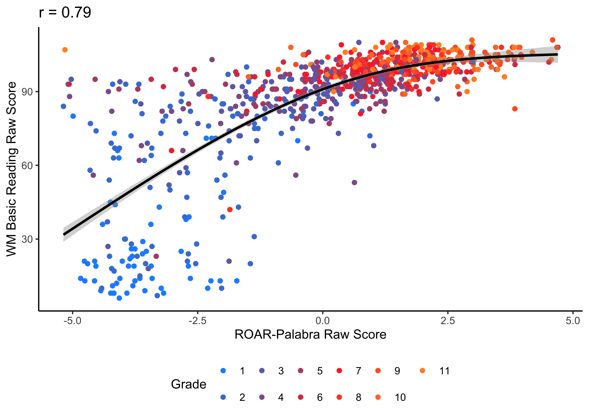
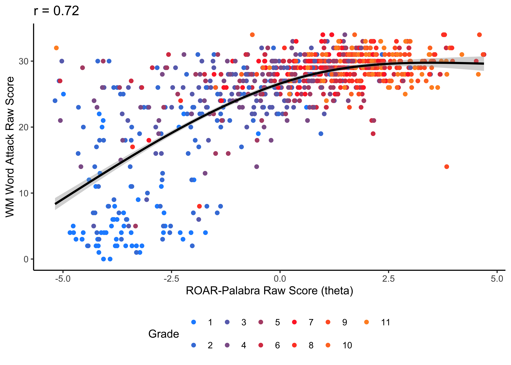

#>
Iteration: 1, Log-Lik: -776447.911, Max-Change: 7.33021
Iteration: 2, Log-Lik: -649209.802, Max-Change: 1.47373
Iteration: 3, Log-Lik: -647327.153, Max-Change: 0.87425
Iteration: 4, Log-Lik: -646910.798, Max-Change: 0.36663
Iteration: 5, Log-Lik: -646642.057, Max-Change: 0.27835
Iteration: 6, Log-Lik: -646404.711, Max-Change: 0.31626
Iteration: 7, Log-Lik: -646181.135, Max-Change: 0.26848
Iteration: 8, Log-Lik: -645973.333, Max-Change: 0.19099
Iteration: 9, Log-Lik: -645778.707, Max-Change: 0.17029
Iteration: 10, Log-Lik: -645594.829, Max-Change: 0.17515
Iteration: 11, Log-Lik: -645420.834, Max-Change: 0.16878
Iteration: 12, Log-Lik: -645256.451, Max-Change: 0.15635
Iteration: 13, Log-Lik: -645101.467, Max-Change: 0.24541
Iteration: 14, Log-Lik: -644952.367, Max-Change: 0.16878
Iteration: 15, Log-Lik: -644813.513, Max-Change: 0.13103
Iteration: 16, Log-Lik: -644681.744, Max-Change: 0.11821
Iteration: 17, Log-Lik: -644557.295, Max-Change: 0.10748
Iteration: 18, Log-Lik: -644440.109, Max-Change: 0.10533
Iteration: 19, Log-Lik: -644329.203, Max-Change: 0.10175
Iteration: 20, Log-Lik: -644224.540, Max-Change: 0.08235
Iteration: 21, Log-Lik: -644126.104, Max-Change: 0.08051
Iteration: 22, Log-Lik: -644033.299, Max-Change: 0.09929
Iteration: 23, Log-Lik: -643945.597, Max-Change: 0.08468
Iteration: 24, Log-Lik: -643863.181, Max-Change: 0.06502
Iteration: 25, Log-Lik: -643785.902, Max-Change: 0.05370
Iteration: 26, Log-Lik: -643713.486, Max-Change: 0.05017
Iteration: 27, Log-Lik: -643645.453, Max-Change: 0.07992
Iteration: 28, Log-Lik: -643581.414, Max-Change: 0.04993
Iteration: 29, Log-Lik: -643521.698, Max-Change: 0.05704
Iteration: 30, Log-Lik: -643465.758, Max-Change: 0.05251
Iteration: 31, Log-Lik: -643413.494, Max-Change: 0.04915
Iteration: 32, Log-Lik: -643364.487, Max-Change: 0.05315
Iteration: 33, Log-Lik: -643318.750, Max-Change: 0.04712
Iteration: 34, Log-Lik: -643276.004, Max-Change: 0.04566
Iteration: 35, Log-Lik: -643236.158, Max-Change: 0.04644
Iteration: 36, Log-Lik: -643199.081, Max-Change: 0.04356
Iteration: 37, Log-Lik: -643164.481, Max-Change: 0.04076
Iteration: 38, Log-Lik: -643132.139, Max-Change: 0.04118
Iteration: 39, Log-Lik: -643102.078, Max-Change: 0.04465
Iteration: 40, Log-Lik: -643074.036, Max-Change: 0.04780
Iteration: 41, Log-Lik: -643047.983, Max-Change: 0.04667
Iteration: 42, Log-Lik: -643023.723, Max-Change: 0.04560
Iteration: 43, Log-Lik: -643001.153, Max-Change: 0.04453
Iteration: 44, Log-Lik: -642980.157, Max-Change: 0.05413
Iteration: 45, Log-Lik: -642960.509, Max-Change: 0.03347
Iteration: 46, Log-Lik: -642942.231, Max-Change: 0.04475
Iteration: 47, Log-Lik: -642925.352, Max-Change: 0.03700
Iteration: 48, Log-Lik: -642909.598, Max-Change: 0.04238
Iteration: 49, Log-Lik: -642894.992, Max-Change: 0.03569
Iteration: 50, Log-Lik: -642881.335, Max-Change: 0.04016
Iteration: 51, Log-Lik: -642868.763, Max-Change: 0.03390
Iteration: 52, Log-Lik: -642856.960, Max-Change: 0.03810
Iteration: 53, Log-Lik: -642846.124, Max-Change: 0.02703
Iteration: 54, Log-Lik: -642835.996, Max-Change: 0.03635
Iteration: 55, Log-Lik: -642826.632, Max-Change: 0.02728
Iteration: 56, Log-Lik: -642817.885, Max-Change: 0.03406
Iteration: 57, Log-Lik: -642809.788, Max-Change: 0.03066
Iteration: 58, Log-Lik: -642802.176, Max-Change: 0.02463
Iteration: 59, Log-Lik: -642795.120, Max-Change: 0.03068
Iteration: 60, Log-Lik: -642788.556, Max-Change: 0.02642
Iteration: 61, Log-Lik: -642782.433, Max-Change: 0.02551
Iteration: 62, Log-Lik: -642776.799, Max-Change: 0.02610
Iteration: 63, Log-Lik: -642771.549, Max-Change: 0.03763
Iteration: 64, Log-Lik: -642766.642, Max-Change: 0.02610
Iteration: 65, Log-Lik: -642762.052, Max-Change: 0.02177
Iteration: 66, Log-Lik: -642757.801, Max-Change: 0.02929
Iteration: 67, Log-Lik: -642737.167, Max-Change: 0.02167
Iteration: 68, Log-Lik: -642734.290, Max-Change: 0.04169
Iteration: 69, Log-Lik: -642731.848, Max-Change: 0.01872
Iteration: 70, Log-Lik: -642728.906, Max-Change: 0.01816
Iteration: 71, Log-Lik: -642726.876, Max-Change: 0.02042
Iteration: 72, Log-Lik: -642725.012, Max-Change: 0.01912
Iteration: 73, Log-Lik: -642715.933, Max-Change: 0.01542
Iteration: 74, Log-Lik: -642714.414, Max-Change: 0.01855
Iteration: 75, Log-Lik: -642713.293, Max-Change: 0.02475
Iteration: 76, Log-Lik: -642709.262, Max-Change: 0.02471
Iteration: 77, Log-Lik: -642708.219, Max-Change: 0.02243
Iteration: 78, Log-Lik: -642707.484, Max-Change: 0.08515
Iteration: 79, Log-Lik: -642706.548, Max-Change: 0.02268
Iteration: 80, Log-Lik: -642705.923, Max-Change: 0.17180
Iteration: 81, Log-Lik: -642705.190, Max-Change: 0.06211
Iteration: 82, Log-Lik: -642704.838, Max-Change: 0.23699
Iteration: 83, Log-Lik: -642704.307, Max-Change: 0.02900
Iteration: 84, Log-Lik: -642703.720, Max-Change: 0.10293
Iteration: 85, Log-Lik: -642703.020, Max-Change: 0.03680
Iteration: 86, Log-Lik: -642702.613, Max-Change: 0.10156
Iteration: 87, Log-Lik: -642702.201, Max-Change: 0.01861
Iteration: 88, Log-Lik: -642702.050, Max-Change: 0.70598
Iteration: 89, Log-Lik: -642701.393, Max-Change: 0.02246
Iteration: 90, Log-Lik: -642701.031, Max-Change: 0.08232
Iteration: 91, Log-Lik: -642700.687, Max-Change: 0.02651
Iteration: 92, Log-Lik: -642700.390, Max-Change: 0.06904
Iteration: 93, Log-Lik: -642700.074, Max-Change: 0.03181
Iteration: 94, Log-Lik: -642699.894, Max-Change: 0.00875
Iteration: 95, Log-Lik: -642699.682, Max-Change: 0.03526
Iteration: 96, Log-Lik: -642699.445, Max-Change: 0.02022
Iteration: 97, Log-Lik: -642699.218, Max-Change: 0.30375
Iteration: 98, Log-Lik: -642698.960, Max-Change: 0.01419
Iteration: 99, Log-Lik: -642698.785, Max-Change: 0.02102
Iteration: 100, Log-Lik: -642698.554, Max-Change: 0.00715
Iteration: 101, Log-Lik: -642698.386, Max-Change: 0.01967
Iteration: 102, Log-Lik: -642698.243, Max-Change: 0.02421
Iteration: 103, Log-Lik: -642697.782, Max-Change: 0.00663
Iteration: 104, Log-Lik: -642697.553, Max-Change: 0.02705
Iteration: 105, Log-Lik: -642697.437, Max-Change: 0.15070
Iteration: 106, Log-Lik: -642697.308, Max-Change: 0.07050
Iteration: 107, Log-Lik: -642697.223, Max-Change: 0.01323
Iteration: 108, Log-Lik: -642697.143, Max-Change: 0.19452
Iteration: 109, Log-Lik: -642697.049, Max-Change: 0.08278
Iteration: 110, Log-Lik: -642696.981, Max-Change: 0.03068
Iteration: 111, Log-Lik: -642696.919, Max-Change: 0.07695
Iteration: 112, Log-Lik: -642696.846, Max-Change: 0.04705
Iteration: 113, Log-Lik: -642696.790, Max-Change: 0.05089
Iteration: 114, Log-Lik: -642696.738, Max-Change: 0.02902
Iteration: 115, Log-Lik: -642696.669, Max-Change: 0.02589
Iteration: 116, Log-Lik: -642696.618, Max-Change: 0.66044
Iteration: 117, Log-Lik: -642696.554, Max-Change: 0.02508
Iteration: 118, Log-Lik: -642696.513, Max-Change: 0.01228
Iteration: 119, Log-Lik: -642696.486, Max-Change: 0.00821
Iteration: 120, Log-Lik: -642696.451, Max-Change: 0.00061
Iteration: 121, Log-Lik: -642696.427, Max-Change: 0.00058
Iteration: 122, Log-Lik: -642696.404, Max-Change: 0.23120
Iteration: 123, Log-Lik: -642696.363, Max-Change: 0.03395
Iteration: 124, Log-Lik: -642696.346, Max-Change: 0.03273
Iteration: 125, Log-Lik: -642696.323, Max-Change: 0.05293
Iteration: 126, Log-Lik: -642696.295, Max-Change: 0.00086
Iteration: 127, Log-Lik: -642696.279, Max-Change: 0.00064
Iteration: 128, Log-Lik: -642696.263, Max-Change: 0.00086
Iteration: 129, Log-Lik: -642696.238, Max-Change: 0.00045
Iteration: 130, Log-Lik: -642696.166, Max-Change: 0.00105
Iteration: 131, Log-Lik: -642696.084, Max-Change: 0.00033
Iteration: 132, Log-Lik: -642696.054, Max-Change: 0.00068
Iteration: 133, Log-Lik: -642696.009, Max-Change: 0.00085
Iteration: 134, Log-Lik: -642695.944, Max-Change: 0.00025
Iteration: 135, Log-Lik: -642695.924, Max-Change: 0.00022
Iteration: 136, Log-Lik: -642695.898, Max-Change: 0.02808
Iteration: 137, Log-Lik: -642695.851, Max-Change: 0.01450
Iteration: 138, Log-Lik: -642695.838, Max-Change: 0.00022
Iteration: 139, Log-Lik: -642695.830, Max-Change: 0.00022
Iteration: 140, Log-Lik: -642695.826, Max-Change: 0.00020
Iteration: 141, Log-Lik: -642695.819, Max-Change: 0.00019
Iteration: 142, Log-Lik: -642695.805, Max-Change: 0.00041
Iteration: 143, Log-Lik: -642695.774, Max-Change: 0.00026
Iteration: 144, Log-Lik: -642695.765, Max-Change: 0.00026
Iteration: 145, Log-Lik: -642695.755, Max-Change: 0.00032
Iteration: 146, Log-Lik: -642695.731, Max-Change: 0.00010
Iteration: 147, Log-Lik: -642695.727, Max-Change: 0.00009
#>
Iteration: 1, Log-Lik: -384385.581, Max-Change: 7.80393
Iteration: 2, Log-Lik: -310973.829, Max-Change: 2.30996
Iteration: 3, Log-Lik: -308661.788, Max-Change: 1.40472
Iteration: 4, Log-Lik: -307887.310, Max-Change: 1.36234
Iteration: 5, Log-Lik: -307319.473, Max-Change: 0.81864
Iteration: 6, Log-Lik: -306830.761, Max-Change: 0.52043
Iteration: 7, Log-Lik: -306388.346, Max-Change: 0.43184
Iteration: 8, Log-Lik: -305983.214, Max-Change: 0.40951
Iteration: 9, Log-Lik: -305610.986, Max-Change: 0.36893
Iteration: 10, Log-Lik: -305266.626, Max-Change: 0.65971
Iteration: 11, Log-Lik: -304948.537, Max-Change: 0.31045
Iteration: 12, Log-Lik: -304656.709, Max-Change: 0.28661
Iteration: 13, Log-Lik: -304388.886, Max-Change: 0.25892
Iteration: 14, Log-Lik: -304143.430, Max-Change: 0.23044
Iteration: 15, Log-Lik: -303919.036, Max-Change: 0.32303
Iteration: 16, Log-Lik: -303715.000, Max-Change: 0.19745
Iteration: 17, Log-Lik: -303532.128, Max-Change: 0.65362
Iteration: 18, Log-Lik: -303366.177, Max-Change: 0.15521
Iteration: 19, Log-Lik: -303219.566, Max-Change: 0.13755
Iteration: 20, Log-Lik: -303089.638, Max-Change: 0.11808
Iteration: 21, Log-Lik: -302974.905, Max-Change: 0.18775
Iteration: 22, Log-Lik: -302874.255, Max-Change: 0.09267
Iteration: 23, Log-Lik: -302786.748, Max-Change: 0.07864
Iteration: 24, Log-Lik: -302710.694, Max-Change: 0.06342
Iteration: 25, Log-Lik: -302644.842, Max-Change: 0.05965
Iteration: 26, Log-Lik: -302588.561, Max-Change: 0.06636
Iteration: 27, Log-Lik: -302540.122, Max-Change: 0.07789
Iteration: 28, Log-Lik: -302498.797, Max-Change: 0.06238
Iteration: 29, Log-Lik: -302463.796, Max-Change: 0.10709
Iteration: 30, Log-Lik: -302433.672, Max-Change: 0.09137
Iteration: 31, Log-Lik: -302408.478, Max-Change: 0.08378
Iteration: 32, Log-Lik: -302386.863, Max-Change: 0.05094
Iteration: 33, Log-Lik: -302368.802, Max-Change: 0.04416
Iteration: 34, Log-Lik: -302353.462, Max-Change: 0.04053
Iteration: 35, Log-Lik: -302340.410, Max-Change: 0.16996
Iteration: 36, Log-Lik: -302329.273, Max-Change: 0.04165
Iteration: 37, Log-Lik: -302320.002, Max-Change: 0.05538
Iteration: 38, Log-Lik: -302312.247, Max-Change: 0.31027
Iteration: 39, Log-Lik: -302305.400, Max-Change: 0.12729
Iteration: 40, Log-Lik: -302299.719, Max-Change: 0.15333
Iteration: 41, Log-Lik: -302294.945, Max-Change: 0.03406
Iteration: 42, Log-Lik: -302290.974, Max-Change: 0.08479
Iteration: 43, Log-Lik: -302285.430, Max-Change: 0.08285
Iteration: 44, Log-Lik: -302282.740, Max-Change: 0.08144
Iteration: 45, Log-Lik: -302280.588, Max-Change: 0.02246
Iteration: 46, Log-Lik: -302279.300, Max-Change: 0.02664
Iteration: 47, Log-Lik: -302277.601, Max-Change: 0.02014
Iteration: 48, Log-Lik: -302276.255, Max-Change: 0.18634
Iteration: 49, Log-Lik: -302274.842, Max-Change: 0.02970
Iteration: 50, Log-Lik: -302273.815, Max-Change: 0.16067
Iteration: 51, Log-Lik: -302272.916, Max-Change: 0.37021
Iteration: 52, Log-Lik: -302271.843, Max-Change: 0.10199
Iteration: 53, Log-Lik: -302271.134, Max-Change: 0.07744
Iteration: 54, Log-Lik: -302270.644, Max-Change: 0.70400
Iteration: 55, Log-Lik: -302270.145, Max-Change: 0.02908
Iteration: 56, Log-Lik: -302269.779, Max-Change: 0.66670
Iteration: 57, Log-Lik: -302269.478, Max-Change: 0.09977
Iteration: 58, Log-Lik: -302269.397, Max-Change: 0.30276
Iteration: 59, Log-Lik: -302269.155, Max-Change: 0.00280
Iteration: 60, Log-Lik: -302268.943, Max-Change: 0.15144
Iteration: 61, Log-Lik: -302268.748, Max-Change: 0.00218
Iteration: 62, Log-Lik: -302268.594, Max-Change: 0.00198
Iteration: 63, Log-Lik: -302268.447, Max-Change: 0.00182
Iteration: 64, Log-Lik: -302268.016, Max-Change: 0.01742
Iteration: 65, Log-Lik: -302267.838, Max-Change: 0.00125
Iteration: 66, Log-Lik: -302267.761, Max-Change: 0.00087
Iteration: 67, Log-Lik: -302267.649, Max-Change: 0.00156
Iteration: 68, Log-Lik: -302267.562, Max-Change: 0.00066
Iteration: 69, Log-Lik: -302267.524, Max-Change: 0.00066
Iteration: 70, Log-Lik: -302267.496, Max-Change: 0.00067
Iteration: 71, Log-Lik: -302267.460, Max-Change: 0.00018
Iteration: 72, Log-Lik: -302267.450, Max-Change: 0.00021
Iteration: 73, Log-Lik: -302267.438, Max-Change: 0.00042
Iteration: 74, Log-Lik: -302267.422, Max-Change: 0.00012
Iteration: 75, Log-Lik: -302267.421, Max-Change: 0.0001025 Spanish Single Word Recognition (ROAR-Palabra) Concurrent Validity
ROAR-Palabra is designed to measure the latent construct of single word reading. Analogous to the concurrent validity analyses for ROAR-Word, we first establish that the silent, lexical decision task in ROAR-Palabra taps into the same latent construct by comparing ROAR-Palabra scores to a variety of other standardized measures of single word reading (see Section 23.1).
Figure 25.1 shows the correlation between ROAR-Palabra raw scores (\(\theta\)) and a composite of Woodcock Muños (WM) Letter-Word Identification (real word reading) and Word Attack (pseudoword reading) raw scores. The correlation between ROAR-Palabra and WM is not as strong as the correlation between ROAR-Word and WJ (Figure 23.1; Figure 23.2; Figure 23.4) but this likely has to do with ceiling and floor effects in the sample: in transparent orthographies like spanish there is substantial less variation in single word reading skills. Figure 25.2 and Figure 25.3 show correlations for WM subtests separately.
25.1 Convergent validity with oral measures of single word reading
25.1.1 Woodock Muñoz


25.1.2 Growth Over Time
Another source of validation is examining growth trajectories of ROAR-Palabra scores over time. Figure 25.4 shows how ROAR-Palabra score steadily increase in each grade.